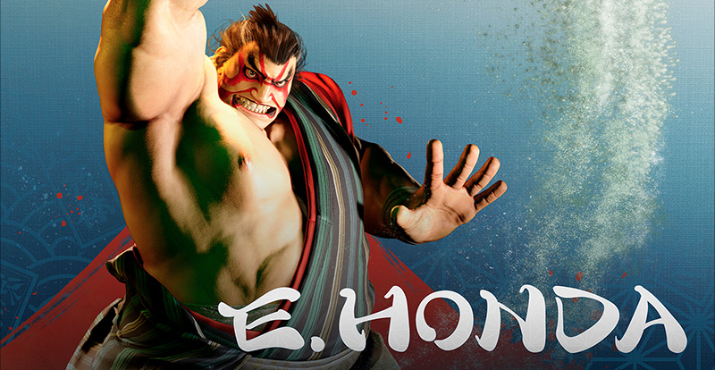

ストリートファイター コマンドリスト
入力の⇐などの矢印は長めに押す
キャラクターリストに戻る
操作方法：例

- P=パンチ K=キック（P弱やK強などは、弱パンチや強キックになる。）
- コマンド例：リュウで LS を↓ ↘ →の順にたおし、P(△ または □ または R1)のボタンを押すと波動拳を出すことができる。
|
 |
|||
| 技名 | 入力 | 説明 / 備考 | カテゴリ / メモ |
|---|---|---|---|
| スーパー頭突き | ⇐ → + P | 頭突きを出しながら水平に飛んで突進する技。 接近手段を兼ねた奇襲やコンボ中の追撃として有効。 |
必殺技近距離～中距離 |
| スーパー百貫落とし | ⇓ ↑ + K | 斜め上方向へ飛び上がり、体重を掛けた垂直落下で攻撃する技。 地上の攻撃を回避しながらの奇襲やガードの揺さ振りに使える。 |
必殺技近距離～中距離 |
| 百裂張り手 | ↓ ↙ ← + P | 高速で張り手の連打を繰り出す技。通常技からのコンボや連係で使いやすい。 | 必殺技近距離 |
| 大銀杏投げ | → ↘ ↓ ↙ ← + K | 前方相手の頭部を掴んで叩き付け、百貫落としで追撃する投げ技。 近距離で相手のガードを崩す手段として有効。 |
必殺技近距離 |
| スーパー鬼無双 | ⇐ → ← → + K | 頭突きの突進と張り手連打から、捻りを加えた頭突きに繋ぐ技。 突進する距離が長く、飛び道具対策やコンボに使いやすい。 |
スーパーアーツ2近距離 ～中距離 |
| 千秋楽 | ↓ ↙ ← ↓ ↙ ← + P | 相手を動かして土俵を描き、寄りきりから強烈に投げ落とす技。 出始めのリーチが長く、出も早いので様々な状況で狙っていける。 |
スーパーアーツ3近距離 |